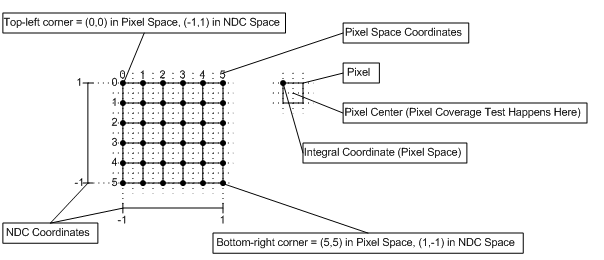

Coordinate systems for Direct3D 10 are defined for pixels and texels.
Differences between Direct3D 9 and Direct3D 10:
Â
The pixel coordinate system in Direct3D 10 defines the origin of a render target at the upper-left corner. as shown in the following diagram. Pixel centers are offset by (0.5f,0.5f) from integer locations.

For reference, here is the pixel coordinate system for Direct3D 9, which defined the origin or a render target as the center of the upper-left pixel, (0.5,0.5) away from the upper left corner, as shown in the following diagram. In Direct3D 9, pixel centers are at integer locations.
The texel coordinate system has its origin at the top-left corner of the texture, as shown in the following diagram. This makes rendering screen-aligned textures trivial (in Direct3D 10), as the pixel coordinate system is aligned with the texel coordinate system.
Texture coordinates are represented with either a normalized or a scaled number; each texture coordinate is mapped to a specific texel as follows:
For a normalized coordinate:
For a scaled coordinate:
Where the width, is the width of the texture (in texels).
Texture address wrapping occurs after the texel location is computed.
Â
Â